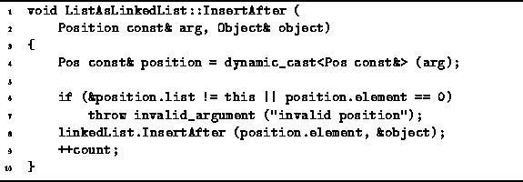

Data Structures and Algorithms
with Object-Oriented Design Patterns in C++
Data Structures and Algorithms
with Object-Oriented Design Patterns in C++Once having determined the position of an item in an ordered list, we can make use of that position to insert items into the middle of the list. Two functions are specifically provided for this purpose--InsertAfter and InsertBefore. Both of these take the same set of arguments: A const reference to a Position which specifies the point at which the insertion is to be made, and a reference to the object to be inserted.

Program: ListAsLinkedList Class InsertAfter Member Function Definition
Program  gives the implementation for the
InsertAfter member function of the ListAsLinkedList class.
After casting the arguments to the appropriate types
and performing some validity checks,
this function simply calls the InsertAfter function
provided by the LinkedList<T> class.
Assuming no exceptions are thrown,
the running time for this function is O(1).
gives the implementation for the
InsertAfter member function of the ListAsLinkedList class.
After casting the arguments to the appropriate types
and performing some validity checks,
this function simply calls the InsertAfter function
provided by the LinkedList<T> class.
Assuming no exceptions are thrown,
the running time for this function is O(1).
The implementation of InsertBefore is not shown--its similarity with InsertAfter should be obvious.
Since it must call the InsertBefore routine
provided by the LinkedList<T> class,
we expect the worst case running time to be O(n),
where  .
.
 Copyright © 1997 by Bruno R. Preiss, P.Eng. All rights reserved.
Copyright © 1997 by Bruno R. Preiss, P.Eng. All rights reserved.